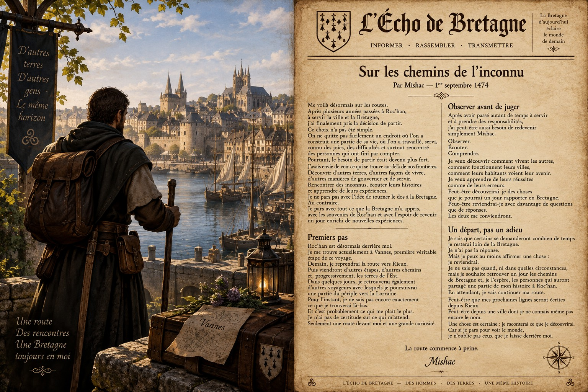

Le journal
Les récits de Mishac
Voyages, rencontres et événements racontés au fil des routes du royaume et d’au-delà.

Chroniques, récits et nouvelles des terres parcourues
Voyages, rencontres et événements racontés au fil des routes du royaume et d’au-delà.
